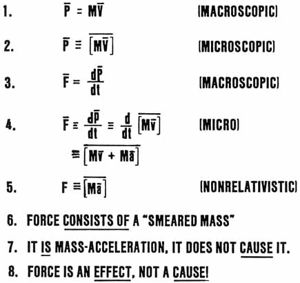

SLIDE 13.
FORCE IS AN EFFECT NOT A CAUSE

| On
this slide, we show briefly how one might express this idea in mathematical
symbology. Macroscopically, momentum consists of mass times velocity. Microscopically, the mass and the velocity are inextricable, and it is not proper to speak of a "mass in motion," but only of "mass-motion." We show this in equation 2. We take the macro definition of momentum, as shown in equation 3, and express it for the microscopic, unseparated case, as shown in equation 4. In the nonrelativistic case, we may consider m-dot to be zero, since the time rate of change of mass is almost zero. In that case, force may be defined for the microscopic case as a smeared accelerating mass, as shown in equation 5. Force thus consists of the welded mass and acceleration, with no seam in the middle. It IS mass-acceleration; it does not CAUSE it. Therefore force is an effect, not a cause. |